Chapter 4. Geocentric Models
2021-04-23
Setup
library(here)
source(here::here("code/scripts/source.R"))slides_dir = here::here("docs/slides/L03")
Introduction into regression models.

As scientists, we’re always dealing with questions that have higher dimensions and more complexity than what we can measure. Above is the path of Mars, called retrograde motion. It’s an illusion caused by the joint movement of ourselves and Mars. The relative velocities create the illusion.

A lot of people published models, but this one is very accurate. They’re full-blown mathematical models. But they’re also wrong. You can’t use them to send a probe to Mars. This is like a regression model. They’re incredibly accurate for specific purposes, but they’re also deeply wrong. Keep in mind the small world / large world distinction.
You could say scientists are geocentric people. The reason Ptolemy’s model works so well is that they used Fourier series - circles in circles (“epicircles”). You can use this for anything with periodic cycles. And this model still works.

We’re here to build models of many diverse things. We don’t usually use Fourier models; instead we tend to use regression. Linear regression models are incredibly useful. But if you use them without wisdom, all they do is describe things without wisdom.

Statistical golems which measure how the mean of some measure changes when you learn other things. The mean is always modeled as some additive weighted measure of variables.
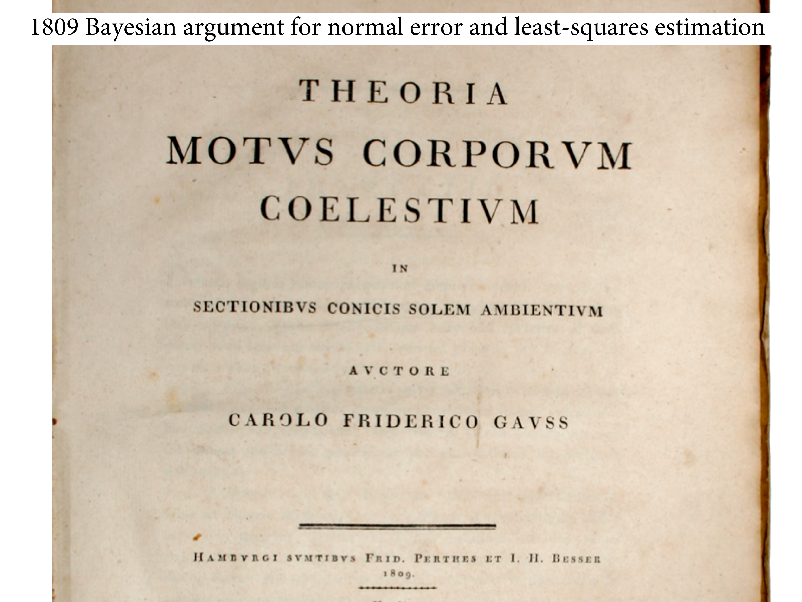
Gauss developed regression, but he did it using a Bayesian argument. He used it to predict when a comet would return.

These appear all throughout nature. Why are they so normal? They arise from all over the place.
One of the things that are nice about them is that they are additive. So easy to work with. Second is that they’re very common.
 Imagine a football pitch. We all line up on the midfield line. Take a coin out of your pocket and flip it. One step left for heads, right for tails. Do it a few hundred times.
Imagine a football pitch. We all line up on the midfield line. Take a coin out of your pocket and flip it. One step left for heads, right for tails. Do it a few hundred times.


The frequency distribution will be Gaussian.

This is a simulation of the soccer field experiment. After four flips (steps). Black follows one particular student. A pattern forms in the aggregation. This isn’t very Gaussian yet.

After 8 it’s pretty Gaussian. 
And after 16 it’s very Gaussian. It’ll get wider and wider over time. Why does this happen? Lot’s of mathematical theorems. But the intuition is that each coin flip is a fluctuation. And in the long run, fluctuations tend to cancel. If you get a string of lefts, eventually you’ll get a string of rights, so the average student will end up near the middle. A very large number of them exactly cancel each other. There are more paths that will give you 0 than any other path. Then there are a few less that give you +1 or -1. And so forth.

That’s why a bunch of natural systems are normally distributed. We don’t need to know anything except that they cancel out. A lot of common statistics follow this kind of process. What you’re left with are particular shapes, called maximum entropy distributions. For the Gaussian, addition is our friend.
One of the things about it is that products of deviations are actually addition. So lots of multiplicative interactions also produce Gaussian distributions.
You can measure things on logarithmic scales.
This is the ontological perspective on distributions. When fluctuations tend to dampen one another, you end up with a symmetric curve. What neat and also frustrating is that you lose a lot of information about the generative processes. When you see heights are normally distributed, you learn basically nothing about it. This is cool because all that’s preserved from the underlying process is the mean and the variance. What’s terrible is that you can’t figure out the process from the distribution.
All the maximum entropy distributions have the same feature. Power laws arise through lots of processes, and it tells you nothing other than it has high variance.
The other perspective is epistemological. If you’re building a model and you want to be as conservative as possible, you should use the Gaussian distribution. Because any other distribution will be narrower. So it’s a very good assumption to use when you don’t have additional information.
The Gaussian is the one where all you’re willing to say is there’s a mean and a variance, you should use the Gaussian. It assumes the least.

All of those things are linear models. Just learn the linear modeling strategies instead of the specific procedures. We’ll build up linear models from the ground up. You can build the model you need.

We’re going to write out all the models in the same standard notation. We’re going to write this in our code so that it’s reinforced.
Same applies for more complex models. Some of these things you can observe (water tosses), and some you can’t (regression slopes). We need to list these variables and then define them.
The motor of these linear regression models. There’s some mean of the normal distribution that is explained by \(x\). But \(x\) also has a distribution.

These height data come from Nancy Howell’s data. Howell1 is a simplified dataset. We’ll focus just on adult heights at the moment.

Here’s the distribution of height data. \(h\) is distributed normally. 
There’s nothing special about the particular letters used. But it’s important to be able to read this. Now we have three variables. One is observed, and two have not. We have to infrer them from \(h\).

Because this is Bayesian, they have prior distributions. Using 187 cm (height of Richard) as the prior. Standard deviation is on the mean. 20 is very generous. Then for sigma, uniform 50.
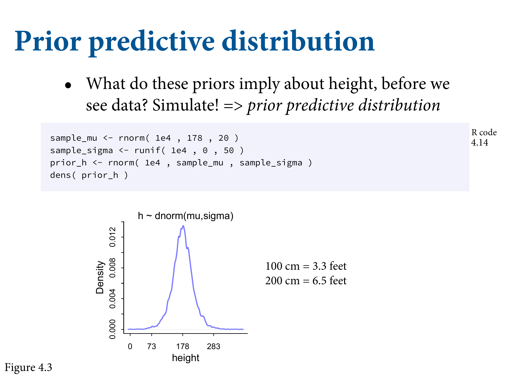
Before your model has seen the data. This is not p-hacking, because we’re not using the data. We’re using scientific information. All you have to sample values.
sample_mu = rnorm(1e4, 178, 20)
sample_sigma = runif(1e4, 0, 50)
prior_h = rnorm(1e4, sample_mu, sample_sigma)
dens(prior_h) This is not a normal distribution. It’s a t-distribution because you have uncertainty about variance, which gives it fat tails. There are some really really tall individuals in this prior. But at least we don’t have any negative heights.
This is not a normal distribution. It’s a t-distribution because you have uncertainty about variance, which gives it fat tails. There are some really really tall individuals in this prior. But at least we don’t have any negative heights.
Let’s use a different prior.
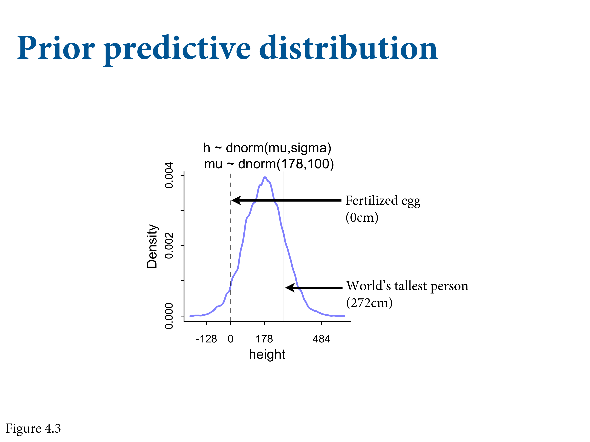
Typical linear regression priors are flat. They’re bad new because they create impossible outcomes before you even see the data.
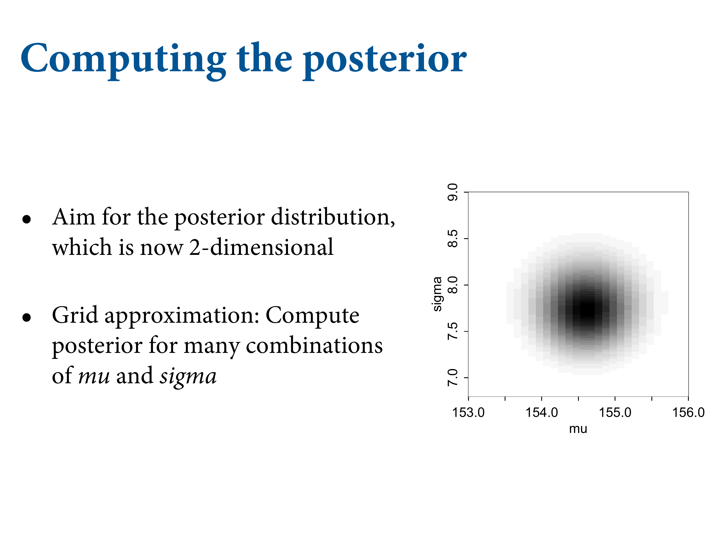
Once you start working with mixed models, the priors have a greater effect, so it’s good to get used to prior predictive simulation now.
We’ll calculate the grid and the posterior probability. How? Multiply the observed height conditional on the mu and sigma at that point. Times the prior probability of that mu and sigma. They code to do this is some loops.

100x100 you start to see the Gaussian hill. Gradually the values become increasingly implausible. What we do here is draw samples.

Once you have the samples, you just work with the data frame. You can look at cross-sections of this.
Note that this isn’t perfectly symmetrical for sigma - the right tail is longer. This is almost always true for SD parameters. Why? Because you know something about the SD before you see the data: you know it’s positive. So you always have more uncertainty on the higher end.

Grid approximation is useful for teaching, but now we’ll do a fancy approximation of it so we can go to higher dimensions. THat approximation asserts that the distribution is normal for every parameter. But once you get to generalised linear models it’s a bad approximation. How does this work? You need two numbers: mean and SD. For multi-dimensional Gaussians, you also need a covariance matrix for the parameters. How do you do it? You climb the hill. It doesn’t know what the hill is, but it knows what is up and down. So it tries to find the peak. When it gets to the peak, it needs to measure the curvature of the peak. And that’s all it needs to approxi ate the curve. Often called the LaPlace approximation.

quap works by making the formula lists. Typically there’s some abbreviated forms. You’ll have to write how every parameter multiplies every variable.
Plug in the parameters and plug it into quap.

quap translates it into a statement about a log probability of the combinations of data, then passes it to the hill-finding algorithm built into R called optim, which passes it back as a list of means and a covariance matrix, which is sufficient to create a posterior distribution.

precis is minimalistic compared to summary. Provides the 89% compatibility intervals.
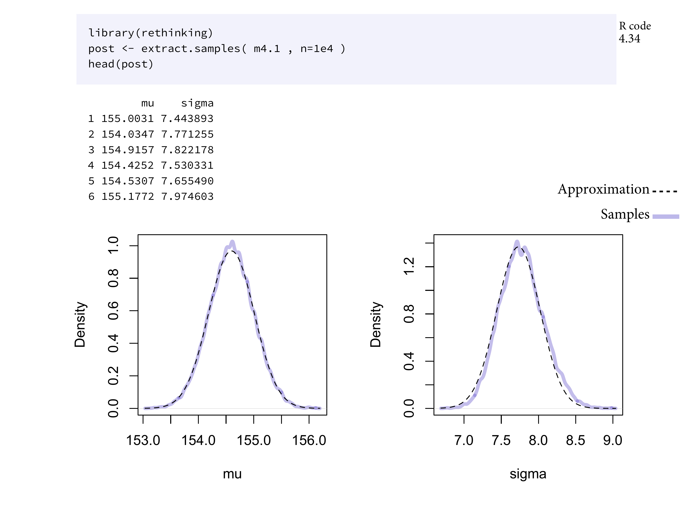
Compare quap to grid approximation. The values in the rows go together. But plot the columns by themselves. Sigma still has a skew.

To find out what it means, you draw some lines. I think of this tool as a scaffold so you can learn how to do modelling. But after you can use packages that use abbreviations. But it’s important to learn how to build them. You’ll come to appreciate how explicit it is.
You want to graduate beyong quap because for generalised linear modelling it becomes dangerous.
 So now let’s add a line. When we learn the predictions, we can learn the statistical association between weight and height. The question is how would you statistically describe this relationship?
So now let’s add a line. When we learn the predictions, we can learn the statistical association between weight and height. The question is how would you statistically describe this relationship?

So what do we do? We add another variable to the model, and now we have a linear regression. This model has all the standard features. Now there’s an \(i\) on \(mu\). That means it’s different for each person. \(alpha\) is out population mean. \(beta\) describes the relationship between \(x\) and \(y\).

The equals sign mean that it’s deterministically defined. \(beta\) is what you’d call a slope, or the rate of change in \(mu\) for a unit change in \(x\). Why do we subtract x bar? This is called centering the predictor. Should be your default behaviour.

It’s now predicting lines. So what does the prior predictive distribution look like? A whole lot of lines.
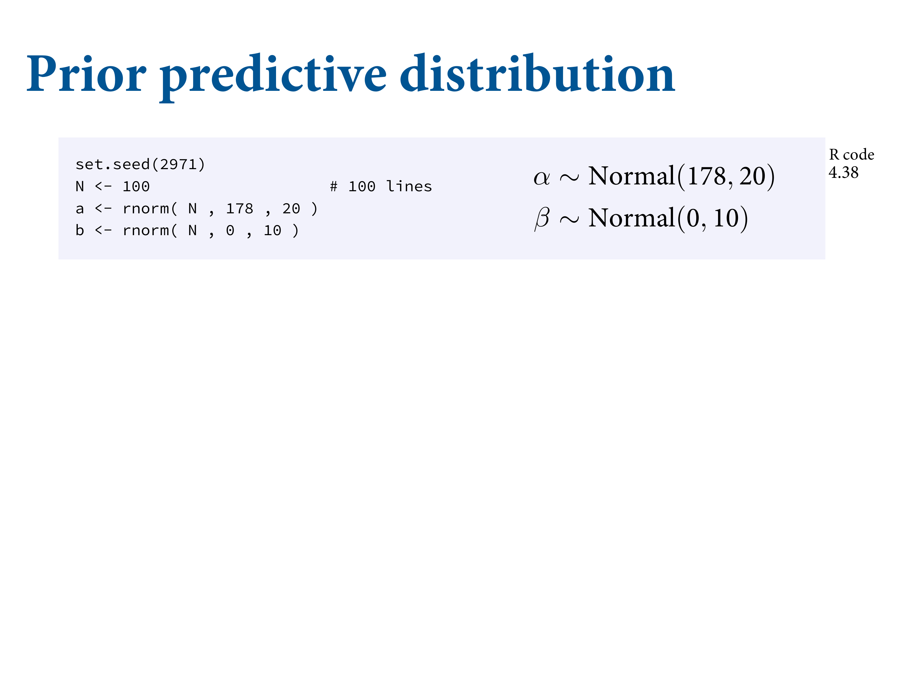
Simulate 100 lines as before.

Getting the scatter right is important, because you can see these impossibly steep lines. Some of them take you from impossibly short individuals to twice the tallest. Want to dampen these expectations. Practise on these safe examples.

We know that \(beta\) is positive, so let’s make it positive. A log normal distribution is a normal distribution logged. What’s nice is that they’re all positive. We want to assume the relationship between weight and height is positive.

Still a lot of scatter, but still one crazy line. Now at least we’re in the possible range.
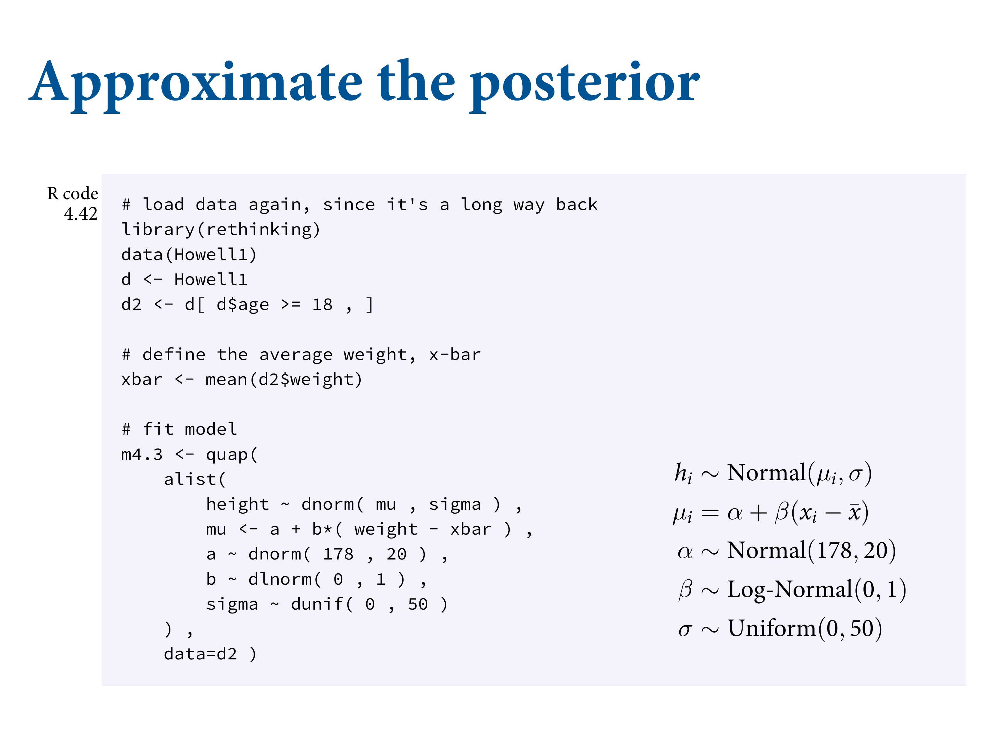
Measure xbar. Then define the quap model. Focus on the \(mu\) line.
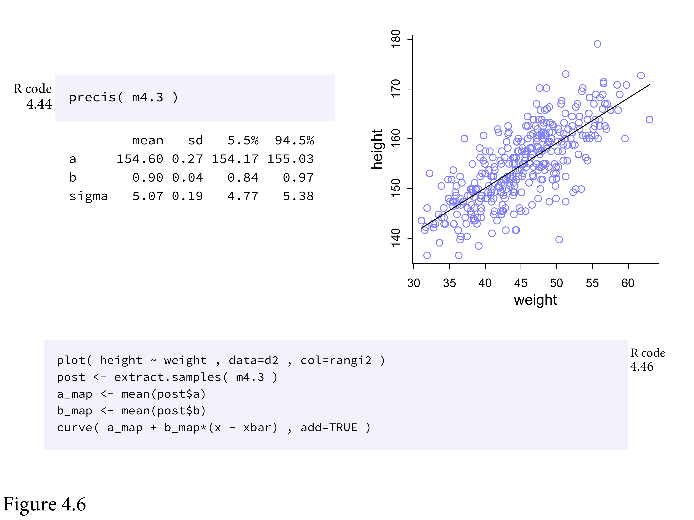
We managed to get this posterior distribution, and we can take from the precis values the a and bb values and draw a line with those, where a is the expected value of height (155) when weight is at its average value. And the expected change in height is nearly 1. But the posterior distribution is not a single line, it’s an infinite number of lines each with a probability. So let’s get more lines on the graph to show the uncertainty in inference.

Here’s the basic idea. We’re going to sample from the posterior distribution. But what’s great is that you can use this process for any model you ever want to fit. You can sample from the posterior, then push the samples back through the model itself to plot the uncertainty.
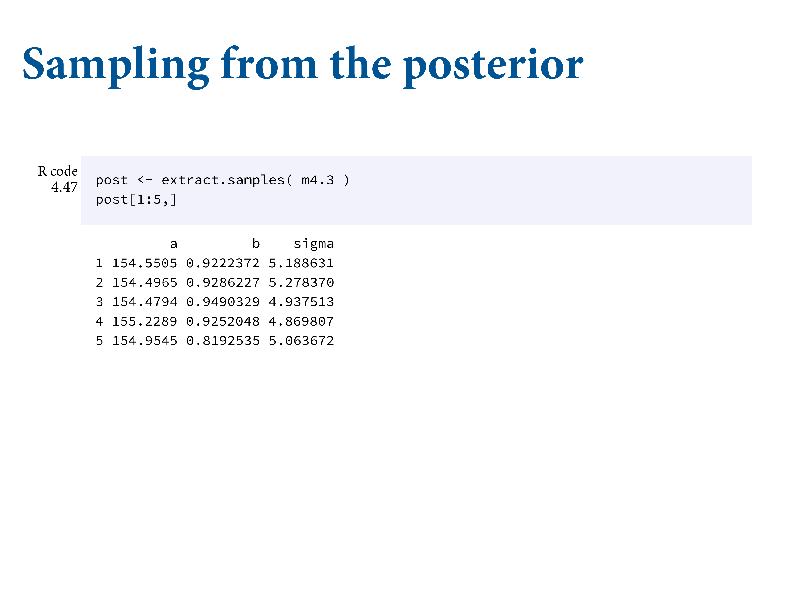 You’re doing calculus here, but just doesn’t feel like it. Each row is a line. Lines that are more plausible have more ways to happen, so they’re overlap more in the areas that are more plausible.

To see this wor, and reinforce how Bayesian updating works, let’s start with a reduced dataset of 10 randomly sampled adults. We fit our linear regression model, and get a quadratic approximation of the posterior distribution. You’ll see they’re very different from the prior. Now they’re very concentrated around the data. You can see there’s a lot of scatter because the model isn’t sure where it should be.
 Now add 50, and you’ll see they get more concentrated. Note the uncertainty at the ends are more uncertain. They pivot around the means in the centre.
Now add 50, and you’ll see they get more concentrated. Note the uncertainty at the ends are more uncertain. They pivot around the means in the centre.


With the whole dataset, it gets quite narrow. You constrained the model to pick a line, and these are the lines that it likes. Doesn’t mean that it’s right.
slides_dir = here::here("docs/slides/L04")

The basic idea that any particular value of the \(x\) variables, \(mu\) has some density. It’s confident of the values on the inside, less of the values on the outside. As an example, what does the model expect the height of the individual is if weight is 50? \(mu\) at 50 is now goingt o create a distribution.

It’s not sure how tall an individual is, but it thinks it’s in this region. But we want to do this for every x-axis value. This is what produces the smooth bowtie.
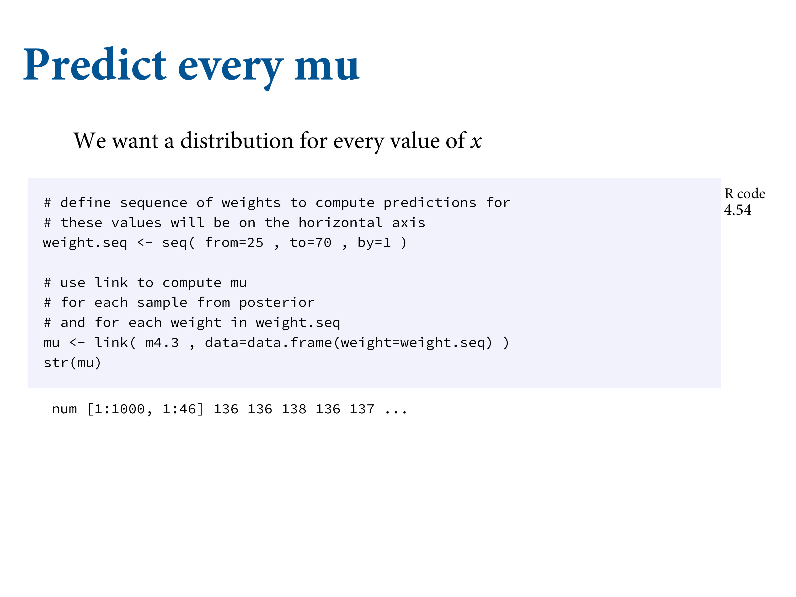
You need to make a sequence of x-axis values (weight.seq). You could make it extraplote further if you like. Then you send these in to the funciton via link. There’s a box in the chapter that shows you how link works. It just loops, but saves you time.
What you end up with in \(m\) is 1000 rows, where each column is a value of weight. Then you can plot these up.

This is like rolling your own link here.

Think what’s going on with the distribution. Fuzzy bowtie. There’s a grey bowtie on the right that follows the same distribution on the left. Just comes from plotting the compatibility interval of the bowtie.
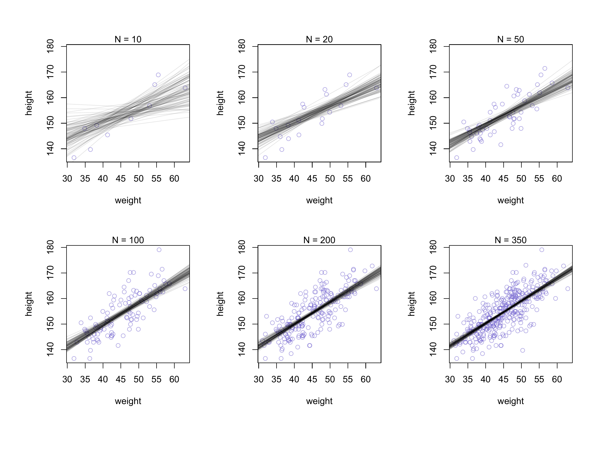
Again, there’s a correspondence between the spaghetti lines, and the bowtie form… 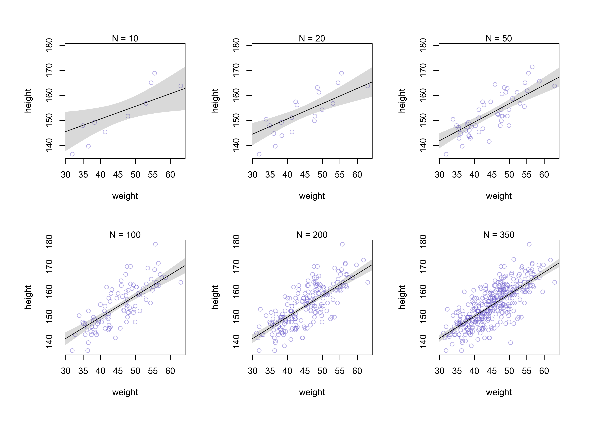 Same information, just a different visual style.
One benefit of the spaghetti lines is it prevents you from thinking the boundary is some magical event. Nothing happens at that boundary. Probability is a continuous space.

We can do the same thing for sigma. There’s an envelope we expect heights to be in.
Helper function called sim that shows conceptually what’s happening.
 That’s linear regression. The funny thing about it is not linear. Really linear regression is additive. You have an equation for \(mu\) which is a sum of a bunch of variables. We should call these additive regressions because you can use them to draw “lines” i.e. curves from lines. Why? There’s no reason that nature should be populated by straight-line relationships. We routinely have reason to think about curvo-linear relationship.
That’s linear regression. The funny thing about it is not linear. Really linear regression is additive. You have an equation for \(mu\) which is a sum of a bunch of variables. We should call these additive regressions because you can use them to draw “lines” i.e. curves from lines. Why? There’s no reason that nature should be populated by straight-line relationships. We routinely have reason to think about curvo-linear relationship.
There are common strategies. The two most common are polynomial regression - the most common - involves adding a square term. Also pretty bad. Often it’s used irresponsibly.
The second is splines. Basis splines, probably the most common. Computer drawing software uses these. They don’t exhibit the common pathologies of polynomials. But remember that they’re geocentric models. So when you receive the information from the model, there’s nothing mechanistic about this, and they can exhibit very strange behaviour outside of the range of the data.
 This is a descriptive strategy for drawing curves for the relationship between two variables. Second-order gives you a parabola. You can keep going - third order, fourth order. And on and on and on. You can push this to the limits of absurdity.
This is a descriptive strategy for drawing curves for the relationship between two variables. Second-order gives you a parabola. You can keep going - third order, fourth order. And on and on and on. You can push this to the limits of absurdity.
 The data we’re going to use is the total sample. Now we’ll use the kids. Looking at this you can appreciate this isn’t a line. Instead, let’s fit a parabola.
The data we’re going to use is the total sample. Now we’ll use the kids. Looking at this you can appreciate this isn’t a line. Instead, let’s fit a parabola.
 We can just glue on an epicycle here and square it. Why? So alpha can be the mean. Then you need to give it a new \(\beta\) coefficient. Setting priors for this is really hard, because \(\beta_2\) has no meaning. But the curve depends on \(\beta_1\) and \(\beta_2\), and they don’t work in isolation. The individual parameters don’t have meaning. It’s a horrible problem in interpretation. Otherwise it’s the same model. It’s a linear regression in the sense that it’s additive.
We can just glue on an epicycle here and square it. Why? So alpha can be the mean. Then you need to give it a new \(\beta\) coefficient. Setting priors for this is really hard, because \(\beta_2\) has no meaning. But the curve depends on \(\beta_1\) and \(\beta_2\), and they don’t work in isolation. The individual parameters don’t have meaning. It’s a horrible problem in interpretation. Otherwise it’s the same model. It’s a linear regression in the sense that it’s additive.

To get the machine to work, very useful to standardise the predictor variables. Center then divide by SD. Take weight, subtract the average weight from each weight value, then divide each of those 0-centered values by the standard deviation of weight. Takes weight and creates a set of z-scores. The fitting software works better on standardise values because it doesn’t have to guess the scale.

There’s a function in R called scale. All it does is subtract the mean, then divide by the standard deviation. Square the standardised weight.
Cooked spaghetti. Now it has an infinite number of parabolas. Now we sample from the posterior, and we got a sample of the high-probability parabolas, a tiny slice of the whole space. And we draw them up, to start with, just 10 individuals. Over the full range, we get parabolas that vary wildly outside of the weights, but straight within the range of the data. This is a phenomenon that’s always present. THe uncertainty intervals always fan out outside of the data range. This is a problem for prediction. Not true for splines. This is because every parameter acts globally on the shape. You can’t tune a specfic region.

Now we add the next 10, including some children, and the flailing stops. Now we get curves in a much smaller region of the parameter space.
 Now it’s getting more concentrated.
Now it’s getting more concentrated. 

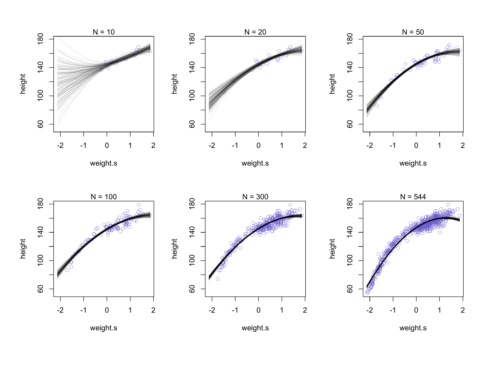
Now a thick dark line. Conditional on wanting a parabola to describe the relationship, here are the parabolas. Doesn’t mean the parabola is correct. 
It’s very sure, conditional on the shape, that that’s the parameter you want. Those lines don’t fit the data very well, but there’s almost no uncertainty about where they are.
I’ve extended the data a bit, and you can see the quadratic bends down. It curves down because it has to. Cubic have to turn twice. Have to turn. Can’t be monotonic.
For the cubic, we add our cubic term \(\beta_3\). Fits even better, but now it’s extrapolating upwards.

In this example, you had that outside of the range below the range. But this can also happen internally, when you have a gap in your data, and it’ll do silly things in between.
The bigger problem is that the parameters all jointly determine the shape, so the model can’t tune them independently to create local fits. That’s why you get silly predictions. Polynomials aren’t that flexible, because the must turn, a certain number of times.

A common alternative is another geocentric model, which is also satisfying because it’s born from a physical system used to do the same thing. A spline is this metal bar on the draftsman’s table. It bends the line to allow drafters to draw smooth curves. This things still exist. The spline is the bar, and the weights are anchors, knots.
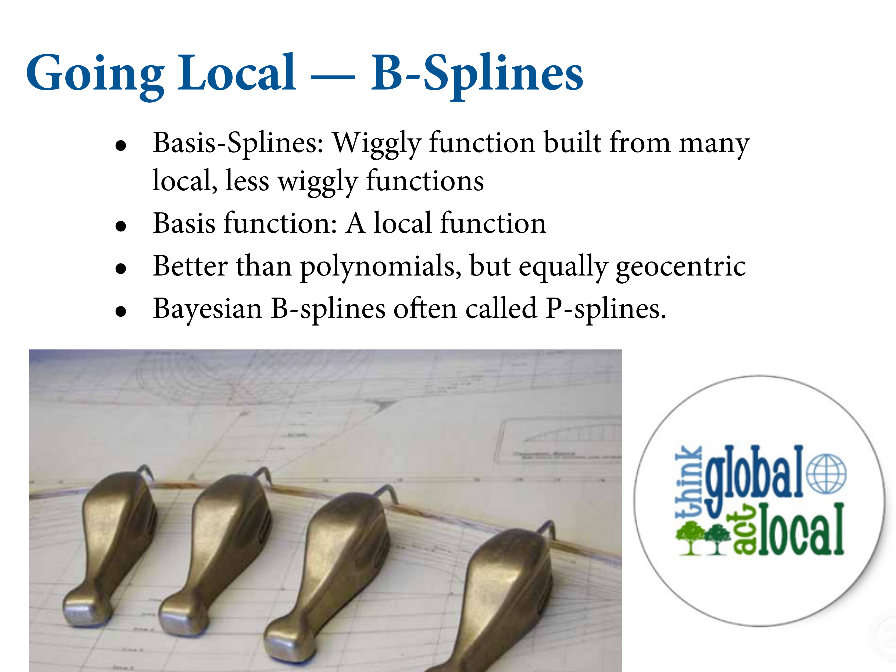 You can get a globally very wiggly function, with a bunch of local wiggly functions by putting them together. Very good for extrapolating. But remember they’re geocentric, so you have to understand how they work.
The basis function is a local function, and the spline is made up of interpolating basis functions. Basis = “component”. Big wiggly function made up of less wiggly functions.
The “P” stands for “penalised”.

Again, it’s a linear model, an additive equation for \(\mu\). But the predictor variables are not observed, rather synthetic data that defines the range of the curve that the parameter acts in. The actual predictor of interest will not appear in your model, but you’ll get a fantastic predictor of the relationship between the variables.
There will be one weight for each of the basis functions. And the weights affect the range defined by the \(\beta\) variables.
 New example. Let’s find something very wiggly. Climate data. Date of first cherry blossom bloom. Turns out there’s a very interesting relationship between the date of bloom, and the temperature. Big signature of climate change in this data.
New example. Let’s find something very wiggly. Climate data. Date of first cherry blossom bloom. Turns out there’s a very interesting relationship between the date of bloom, and the temperature. Big signature of climate change in this data.

1215 observations. Earliest date is little after 800. A few gaps. Earlier dates are getting temps from tree rings. Wiggles a lot. You can see there’s overlap. You’ll recognise the end of this trend. Our goal is to de-trend this temperature record. We want to look at micro-deviations.
 Let’s start with a terrible approximation, and work forwards.
Let’s start with a terrible approximation, and work forwards.
Here’s the recipe. First choose the location of the knots. Here they are points where the basis spline pivots. Choose a degree of the basis function. Then choose degree of local spline. Then find the posterior distribution of weights. Run this just like any old linear regression.
 Start with just 5 knots at equal quantiles. Large literature on this. Nice because it gives you more knots where there’s more data. One at the median, then one at each extreme, and one in between.
Start with just 5 knots at equal quantiles. Large literature on this. Nice because it gives you more knots where there’s more data. One at the median, then one at each extreme, and one in between.
Let’s think about construction of these synthetic variables. Think of year. We’ll never use them again. The knots are anchored at year, but then they’re gone. Start with a degree 1 basis function (i.e. straight line). Wiggly function composed of straight line. Focus on the one in red. Basis fucntion 4 has its maximum value at the fourth knot. Only basis function with a non-zero value at that location. It’s weight is determining the position of the spline at that point. As you move away, there are two basis functions that are turning on. Each of them have they’re own precious parameter value.
When you get to higher degress, they’ll be curves. At any particular point (except at a knot), two of these basis functions will determine the value.

The only new trick here is to use linear algebra. You can imagine writing 5 terms.
We have a prior for each of the weights. If you make it tighter, the curve gets less wiggly, and that’s why they call it a penalty. You want one so that you don’t overfit.

Repeating the equation for \(\mu\). Showing you the posterior mean weights multiplied by those basis functions. That’s what the predictor up top is. Focusing on the posteriro mean. There’s uncertainty here. What happens now is you’re adding those values together. Two lines get added together, and that determines prediction of temperature.

Resulting spline isn’t super wiggly. Depends on what you want to de-trend.

Let’s do cubic splines. Most popular because they’re flexible but not crazy. Play around with the number of knots. What you’ll see is you can have too few knots, but at some point you’ll have enough that it won’t make much of a difference. This is what the basis functions look like, and now they’re wigglier, but they also overlap more, so now at a particular point you can have up to four basis curves overlapping.
 Here’s with 50 samples from the posterior distribution. There’s all this wiggle, and you add them together and get the spline. Some of these regions have substantial uncertainty about the weight. The uncertainty will collapse. At the parameter level, there’s more uncertainty than there is at the prediction level. This is because the parameters combine to make a prediction. You can be uncertain about the values of the parameters, but you can be very certain about they’re sum. Because if you make \(w_3\) bigger, you have to make something else smaller. So when you plot the parameters, you’ll see a lot more uncertainty than the predictions.
Here’s with 50 samples from the posterior distribution. There’s all this wiggle, and you add them together and get the spline. Some of these regions have substantial uncertainty about the weight. The uncertainty will collapse. At the parameter level, there’s more uncertainty than there is at the prediction level. This is because the parameters combine to make a prediction. You can be uncertain about the values of the parameters, but you can be very certain about they’re sum. Because if you make \(w_3\) bigger, you have to make something else smaller. So when you plot the parameters, you’ll see a lot more uncertainty than the predictions.
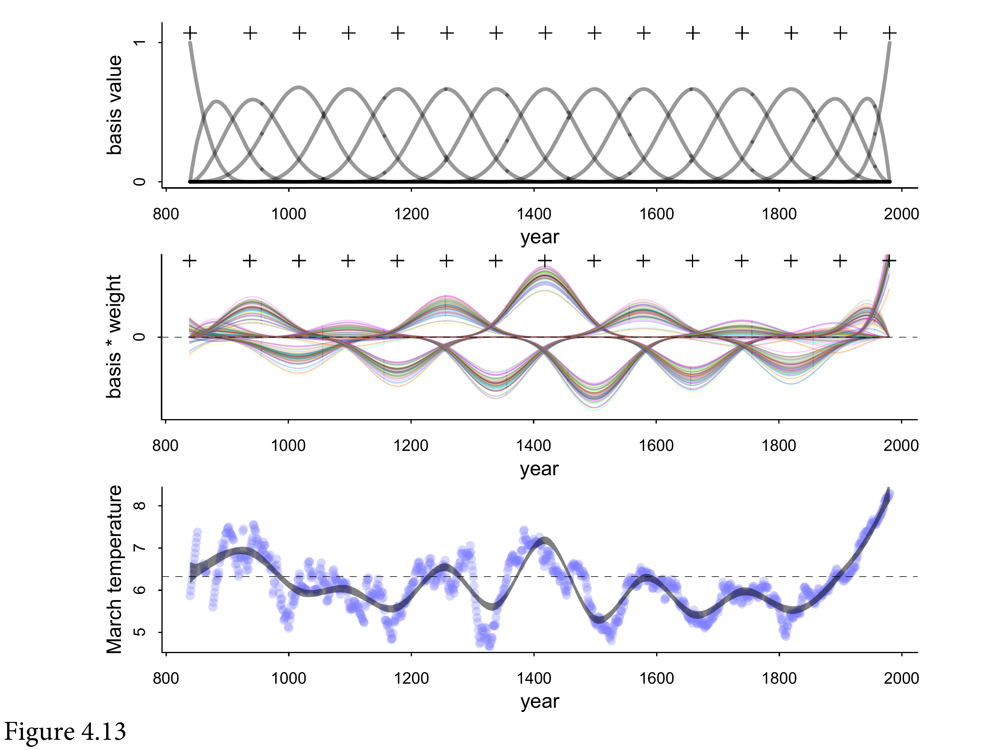
Now when we add them, we get a pretty wiggly line. The amount of wiggliness depends on your scale of interest.
Play around with the knots and degree and priors.
 Lots of different methods. There are ways of doing Bayesian splines where the number of knots is a parameter you can get a posterior distribution for. Why not just have a knot at every year.
Lots of different methods. There are ways of doing Bayesian splines where the number of knots is a parameter you can get a posterior distribution for. Why not just have a knot at every year.